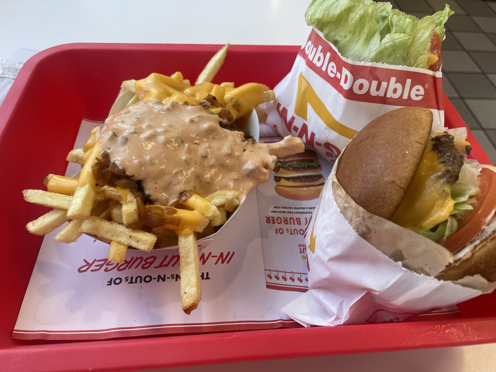

Ongoing Journey - August 2023
New credit card
AMEX's design is so niceGot a new credit card.
My first was back in high school, remember mom handing it in a small, white envelope folded in half and said:
‘Use it a lot and always pay it off, it’s useful morgage a house later.’
Four years later, still working on the house :)
Well actually, the one time I did use it I maxed out. Somehow the money you spent on credit card, shows as a positive balance on the bank app.
I thought I was gaining money using the credit card.
…
My mom was always right, I’ve chose the wrong end. Unsaid from ‘begin with an end in mind’, the end I chose should be as specific as possible, making it easier to act on.
What if the goal is ‘get a credit card so I can buy an extra burger every month?’
The answer was pretty clear.
:)Gap semester
There is a tendency in our university of choosing the job first instead of major. Aspiring software engineer goes to computer science, future consultant to business, etc.
For those who doesn’t know? Well almost always, information systems :)
…
The things is, majors are always there, jobs tend not to be.
Fourth time seen mid-jounrey replacing artists, I wonder how many developers/designers/product managers the market needs in the future; that thought sprials into questioning college, what makes me going there in the first place?
…
It’s less about chosing the wrong end, but thinking there is only one way to get there.
I did go to university with an end in mind (to get a job), so excited that I ignroed the fact that, my goal was to solve the problem.
And most problem have multiple solutions.
…
That was my reasoning taking yet another gap semester, I felt another way to get job is to make yourself unique, different enough to leave an lasting impression, making others curious on how I get there.
Questions still poses of course, how I can find a sustainable way to live a new life style, what I should do to execute on the goal. Along with this, university is one of the most valuable for networking and making relationships, via Nancy:
Friends! Thank you PLUSi’m always fascinated connecting with those very different from me, hearing their stories, unlocking parts of the world i’ve never seen before. seeing the world continuously expand, walking the new shortcuts and alleyways. crossing, discovering, building bridges.
Keeping the blog
placeholderAs read, August was a pretty torn month, juggling between different path, and getting anxious as deadline comes close.
This blog was part of the juggle, too. Recently saw this quote:
作品即人。它不是人的一部分，而是人的一个阶段，是这个阶段的全部的那个人。你虛作品就虛，你躁作品就糙，你脆弱作品就生硬，你高傲作品就小气，你浅薄作品就邪恶。你懒，就没有作品。
Felt empowered. Having a method of output, writing it less for others, more as a record of who I am at the moment, think that’s the ‘end’ I have in mind.